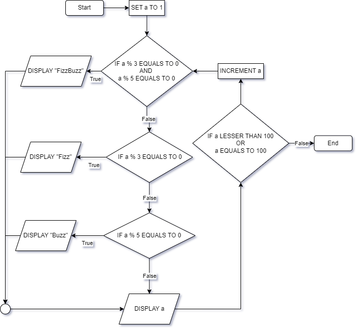

Pseudokode og flytskjema#
Pseudokode og flytskjema er måter å representere programmer eller rutiner. Disse representasjonsformene er nyttig for å kommunisere på tvers av programmeringsspråk.
Vi skal vi ta utgangspunkt i FizzBuzz for å lage diagrammer og skrive pseudokode.
FizzBuzz
Lag et program som skriver ut tallene fra og med \(1\) til og med \(100\), men…
… om tallet er delbart på \(3\) skal du skrive ut
Fizz… om tallet er delbart på \(5\) skal du skrive ut
Buzz… om tallet er delbart på både \(3\) og \(5\) skal du skrive ut
FizzBuzz
Forslag: FizzBuzz i Python
for a in range(1, 101):
if a % 3 == 0 and a % 5 == 0:
print("FizzBuzz")
elif a % 3 == 0:
print("Fizz")
elif a % 5 == 0:
print("Buzz")
else:
print(a)
Pseudokode#
I pseudokode bruker vi et uformelt språk for å representere en programflyt, men uten å kompilere det til et program som skal kunne kjøre på datamaskinen. Selv om språket er uformelt, så er det nyttig å være enig om hvordan man skriver enkelte ting. Her kommer noe av det språket som brukes på eksamen.
Logiske operatorer#
Logiske operatorer returnerer sannhetsverdier (True eller False) for utsagn. Man kan sette sammen flere utsagn med AND eller OR.
a LESSER THAN 100
a LESSER THAN 100 OR a EQUAL TO 100
a < 100
a <= 100
Output og input#
I Python tar vi input med input() og skriver output med print().
READ a
a = input()
Man kan også bruke PRINT eller SHOW
DISPLAY "Hello World!"
print("Hello World!")
Operasjoner#
Operasjoner er ting som å sette lik, lese fra input og vise output til bruker.
SET a TO 1
SET ferdig TO False
a = 1
a = False
INCREMENT a
DECREMENT b
a += 1
b -= 1
SET a TO 4
CALL sqrt(a) RETURNING svar
DISPLAY svar
a = 4
svar = sqrt(a)
print(svar)
Flytkontroll (branching)#
Flytkontroll gjør at vi kan styre flyten av programmet. I Python gjør vi det med løkker, if-setninger, klasser og funksjoner.
FOR x IN liste
DISPLAY x
ENDFOR
FOR n IN [1, 2, ..., 100]
DISPLAY n
ENDFOR
for x in liste:
print(x)
for n in range(1, 101):
print(n)
SET n TO 1
WHILE n LESSER THAN 10
DISPLAY n
INCREMENT n
ENDWHILE
n = 1
while n < 10:
print(n)
n += 1
FUNCTION f(x)
RETURN x**2
ENDFUNCTION
def f(x):
return x**2
IF alder GREATER THAN 67
THEN SET pris TO 50
ELSE IF alder LESS THAN 18
THEN SET pris TO 25
ELSE SET pris TO 75
IF kunde_type EQUALS TO "Administrator"
THEN SEQUENCE
DISPLAY "Trykk 1 for å vise passordene"
READ a
IF a EQUALS TO "1"
THEN DISPLAY passord_liste
if alder > 67:
pris = 50
elif alder < 18:
pris = 25
else:
pris = 75
if kunde_type == "Administrator":
a = input("Trykk 1 for å vise passordene")
if a == "1":
print(passord_liste)
Eksempel: FizzBuzz#
Her er et eksempel på hvordan man kan skrive FizzBuzz med pseudokode. Prøv gjerne selv før du åpner eksempelet.
Forslag: FizzBuzz med pseudokode
SET a TO 1
WHILE a LESSER THAN 100 OR a EQUAL TO 100
IF a % 3 EQUALS TO 0 AND a % 5 EQUALS TO 0 THEN DISPLAY "FizzBuzz"
ELSE IF a % 3 EQUALS TO 0 THEN DISPLAY "Fizz"
ELSE IF a % 5 EQUALS TO 0 THEN DISPLAY "Buzz"
ELSE DISPLAY a
INCREMENT a
ENDWHILE
Flytskjema#
Her er et flytskjema som representerer programflyten for FizzBuzz. Flytskjemaet er tegnet i draw.io.
Her er en forklaring på tegnene som brukes.
Diamanter ♦️ brukes for if-setninger
Parallellogrammer brukes for input/output
Bokser brukes for prosesser hvor man endrer på data.
Rundede bokser brukes til start og stopp på programmet.
Sirkelen nede til venstre er bare en måte å rydde litt i tegnene; litt cable management.
Oppgaver#
Oppgave 1 🅰️
Et karaktersystem er som følger:
Måloppnåelse |
Prosent riktig |
|---|---|
Høy |
80% - 100% |
Middels |
60% - 79% |
Lav |
0% - 59% |
Du skal lage et program som tar en poengsum og en maks_poengsum som input, regner ut prosent riktig, og printer en måloppnåelse basert på tabellen over.
Lag et flytskjema for programmet.
Lag en pseudokode for programmet.
Implementer programmet i Python.